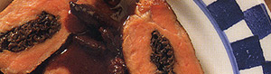

Schweinsfilet
5 von 6schweinsfilet: die eingeweichten morcheln abgiessen und die flüssigkeit aufbewahren. mit butter und schalotten
die morcheln dünsten und mit etwas morchelwasser ablöschen. auskühlen. in das filet eine tiefe
tasche schneiden und mit der hälfte der morcheln füllen. mit schnur zusammennähen und mit
salz und pfeffer würzen. ca. 5 minuten beidseitig anbraten. in den vorgewärmten ofen (80 grad)
mind. 1 1/2 stunden garen lassen.
morcheljus: den bratensatz mit 150 ml madeira, dem restlichen morchelwasser und 1/4 l rotwein und auf
ca. 150 ml einkochenlassen. vor dem servieren mit ca 80 g butter, salz, pfeffer und etwas
zitronensaft verfeinern.
